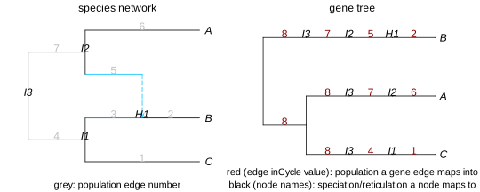

example uses
We are re-using the same network and simulated tree as before:
julia> writeTopology(net)"((C:0.9,(B:0.2)#H1:0.7::0.6)I1:0.6,(#H1:0.6::0.4,A:1.0)I2:0.5)I3;"julia> writeTopology(tree, round=true)"((((C:0.9)I1:0.6)I3:0.64,((A:1.0)I2:0.5)I3:0.64):1.424,(((B:0.2)H1:0.6)I2:0.5)I3:2.064);"

counting deep coalescences
The number of deep coalescences can be quantified as the number of "extra" lineages due to incomplete lineage sorting, that can be calculated from embedding the gene tree into the species phylogeny (see Maddison 1997 for species trees). For a speciation node in the species tree (e.g. I1), there are extra lineages in the gene tree, owing to a lack of coalescence, if there are more than 2 gene lineages mapping to this speciation node. For each hybridization node (e.g. H1), there are extra lineages if there are more than 1 gene lineage mapping to this hybridization node (because there's only 1 child edge descending from a hybridization node).
We can count the number of extra lineages by counting the number of degree-2 nodes in the gene tree mapping to each node in the species network, then counting how many are "extra". In our gene tree above, we can do it this way:
julia> node_count = Dict(n.name => 0 for n in net.node if !n.leaf) # ignore leavesDict{String, Int64} with 4 entries: "H1" => 0 "I1" => 0 "I2" => 0 "I3" => 0julia> node_hyb = Dict(n.name => n.hybrid for n in net.node if !n.leaf) # true/1 for hybrid nodesDict{String, Bool} with 4 entries: "H1" => 1 "I1" => 0 "I2" => 0 "I3" => 0julia> # traverse the gene tree, to count number of lineages entering each network node for n in tree.node (n.leaf || n.name == "") && continue # skip leaves and nodes without a name node_count[n.name] += 1 # increment by 1 the number of lineages entering this node endjulia> node_count # the 2 lineages entering I2 didn't coalesce until they reached I3Dict{String, Int64} with 4 entries: "H1" => 1 "I1" => 1 "I2" => 2 "I3" => 3julia> for node in keys(node_count) # modify our counts, to only keep the extras node_count[node] = max(0, node_count[node] - ( node_hyb[node] ? 1 : 2)) endjulia> node_count # number of extra lineages: 1 extra entering I3Dict{String, Int64} with 4 entries: "H1" => 0 "I1" => 0 "I2" => 0 "I3" => 1julia> deepcoalescence = sum(values(node_count))1
On the particular gene tree we simulated, we counted 1 deep coalescence.
number of lineages inherited via gene flow
Our network has inheritance γ=0.4 on the minor edge, which we'll call the "gene flow" edge, and γ=0.6 on the major hybrid edge, parent to H1 on the major tree. But we may be interested in the realized proportion of lineages inherited from each parent at H1, realized in the gene trees we actually simulated. To do so, we can count the number of gene lineages that are mapped to each hybrid edge in the network.
This mapping is stored in the edge attribute .inCycle. From the plot above, the minor "gene flow" edge is edge number 5 and the major hybrid edge has number 3. So we can count the gene lineages inherited via gene flow as the number of gene tree edges with inCycle equal to 5.
If the gene trees have been saved to a file and later read from this file, then the .inCycle attributes are no longer stored in memory. In this case, we can retrieve the mapping information by the internal node names. The edges going through gene flow are those whose child node is named "H1" and parent node is named "I2".
We use the first option with the .inCycle attribute below. We get that our one simulated gene tree was indeed inherited via gene flow:
julia> sum(e.inCycle == 5 for e in tree.edge)1
To make this more interesting, we can simulate many gene trees then count how many of their lineages were inherited via gene flow. If we ask for 2 individuals in species B, then each gene may have 2 lineages that enter the hybrid node H1, if the two B individuals fail to coalesce. In that case, it's possible that one individual lineage was inherited via gene flow, and the other not. We'll calculate the gene flow proportion among all these lineages. This proportion should be close (but not exactly equal) to the theoretical γ=0.4 from the network model.
julia> ngenes = 100100julia> genetrees = simulatecoalescent(net, ngenes, Dict("B"=>2, "A"=>1, "C"=>1); nodemapping=true);julia> length(genetrees)100julia> nlineages_geneflow = sum(sum(e.inCycle == 5 for e in gt.edge) for gt in genetrees)70julia> nlineages_major = sum(sum(e.inCycle == 3 for e in gt.edge) for gt in genetrees)129julia> # realized γ, close to 0.4: proportion_geneflow = nlineages_geneflow / (nlineages_geneflow + nlineages_major)0.35175879396984927
rate variation across species
The gene trees resulting from simulatecoalescent have their edge lengths in coalescent units. One may want to convert them to substitutions per site, so as to simulate molecular sequences along these gene trees. The mapping information is important to allow for different rates of molecular evolution across different species. Here is an example to do this.
We will use the Distributions package to simulate rates from a log-normal distribution across species, that is, across edges in the species network.
julia> using Distributionsjulia> lognormal_rate_dist = LogNormal(-0.125, 0.5) # μ = -σ²/2 to get a mean of 1.Distributions.LogNormal{Float64}(μ=-0.125, σ=0.5)julia> networkedge_rate = Dict(e.number => rand(lognormal_rate_dist) for e in net.edge)Dict{Int64, Float64} with 7 entries: 5 => 0.68631 4 => 1.23458 6 => 1.84251 7 => 0.438 2 => 1.43724 3 => 1.09321 1 => 0.580741julia> # add entry for the edge above the network's root. Find its number first. rootedgenumber = PhyloCoalSimulations.get_rootedgenumber(net)8julia> push!(networkedge_rate, rootedgenumber => rand(lognormal_rate_dist))Dict{Int64, Float64} with 8 entries: 5 => 0.68631 4 => 1.23458 6 => 1.84251 7 => 0.438 2 => 1.43724 8 => 1.39978 3 => 1.09321 1 => 0.580741julia> writeTopology(tree, round=true, digits=4) # before rate variation"((((C:0.9)I1:0.6)I3:0.64,((A:1.0)I2:0.5)I3:0.64):1.4235,(((B:0.2)H1:0.6)I2:0.5)I3:2.0636);"julia> # multiply the length of each gene lineage by the rate of the species edge it maps into for e in tree.edge e.length *= networkedge_rate[e.inCycle] endjulia> writeTopology(tree, round=true, digits=4) # after rate variation"((((C:0.5227)I1:0.7407)I3:0.8959,((A:1.8425)I2:0.219)I3:0.8959):1.9926,(((B:0.2874)H1:0.4118)I2:0.219)I3:2.8885);"